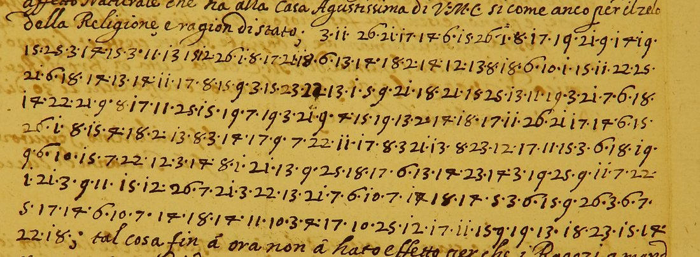
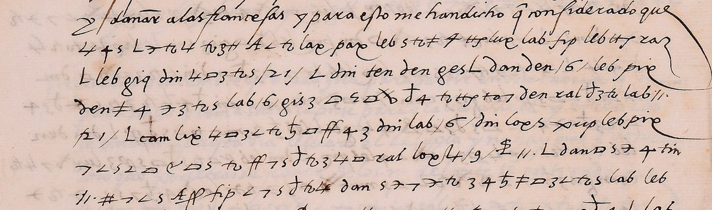
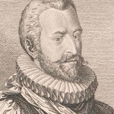
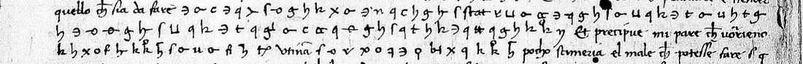

Three ways to help
Or check one of 191 readings waiting for an independent check, or send a cipher that is not listed. Every contribution is credited. How to contribute →
Results so far
598 entries, one per row of the results tables, each classed by how its text was obtained. 22 turned out not to be ciphers or could not be reached and 11 are in progress, which leaves 565 attempted; every percentage here is of those 565.
breakdown
91 from the ciphertext alone, 99 from plaintext beside the ciphertext, 21 from plaintext found elsewhere. 108 of them with outside contributors. In 10 of them the key was recovered but the text does not yet read.breakdown
117 with a known key, 40 with a key matched here from another document, 101 from a complete existing decipherment. In 16 of them the key was applied but the text does not yet read.All 9 categories
Every entry by date, 1398–1991. Hover or tap a dot for the story; open the categories and click one to isolate it.
Counted from the results tables in the repository README by _build_stats.py; regenerated 06 November 2026. Rows are documents, not correspondents.
Start with these

The Voynich manuscript
Statistical tests on the transliteration of Beinecke MS 408; no text was obtained. Plaintext and simple substitution, transposition or abjad renderings of eleven European languages are excluded. A verbose cipher of glyph groups and structured meaningless text remain, about even.
h2 2.2–2.9 bits against a 3.3 floor · slot grammar 1.7–2.3× more rigid than any language
read →
Fra Giovanni di Lucca to Ferdinand III, 1644
A 231-figure Italian cipher paragraph in a friar’s letter to the Emperor (DECODE R2159), a substitution with two figures for each vowel. The key was recovered using the opening words Tomokiyo had published as a crib, and every figure was decrypted; checked against the manuscript, the apparent polyphony turned out to be ten misread 4s and three encipherment slips. The Grand Hetman Koniecpolski offers to keep the Turk from Rákóczi, raise Moldavia against him and give two thousand Cossacks.
“il principe di Bogdania, et li darò dumilia Cosachi … che non faccia pace fin che non l’habbi humiliato o vinto”
 read →
read →

Armstrong’s coded postscript to Madison, 1808
A 49-group postscript in the code THE=972. The code was recovered from a State Department clerk’s pencil decodes of Armstrong’s 1806 despatches on NARA microfilm, merged with Tomokiyo’s partial table from a known-plaintext letter, with remaining groups inferred from their alphabetical position. All 49 groups are decoded, the last with one digit emended: Armstrong wants Russel as consul at Paris, not the Irish-born Warden. With about 160 more values the same table then decoded twelve further despatches of 1807–1810, among them the warning of February 1808 that France offers alliance with one hand and menaces war with the other.
“Russel ought to be the consul: he is an American by birth … Next to him in fitness is O’Mealy, but he is, like Warden, an Irishman.”

 read →
read →

The Swatow telegram to Sun Yat-sen, 1916
A telegram intercepted by the Japanese Foreign Ministry, in the Chinese telegraph code through a letter condenser. The condenser table was recovered from the ciphertext alone by testing every table of the systematic family known from Yamada’s condensers. 41 of about 44 characters are decoded; they report Mo Qingyu’s rising at Chaozhou.
潮城由莫擎宇獨立。我軍亦光復汕頭。後莫率大隊來，令我退出鎮守府…
 read →
read →

Feuquières to Catinat, Pignerol 1691
A 418-group despatch printed in figures in the 1819 Mémoires de Catinat, in the petit chiffre of the Pignerol governors. The code was recovered by aligning another letter in it, printed in the same edition with its contemporary translation, and carrying the values between the two letters; 586 of 601 groups have a value. The plan for the surprise of Veillane. Bazeries deciphered it in 1893 but did not publish the text.
“j’attaqueray [par] deux endrois, et surtout … prendray garde que les dragons ne puissent m’eschaper”
 read →
read →

Lord Maltravers to the Earl of Ormonde, 1634–35
Two letters printed by the HMC in 1895 with 59 figures of a numerical cipher and no decipherment. The key was recovered from the adjacent cleartext: a regular alphabet in blocks of three consecutive figures (consonants from 7, vowels from 64), nulls 91–111 and a small nomenclator. Seven of the nine code numbers were identified from Wentworth’s dispatches in Knowler’s Strafforde’s Letters (1739).
“he was angry [with the Lord Deputy] … upon his motion [Ormonde] is to be a councellor”

 read →
read →
Thirty favourites: the funny, the historic, the ingenious →
Latest findings


Lope de Soria to Charles de Lannoy, Genoa, 7 March 1527 — a hundred lines in a cipher nobody had read, key recovered from the ciphertext alone: Genoa’s galleys, the Pope’s truce and Savona, eight weeks before the Sack of Rome; 95.5% of the cipher tokens write-up
 Contucio to Francesco Sforza, Venice, 7 December 1446 — the cipher in a Sforza envoy’s report deciphered with the envoys’ own key (DECODE R5314): Venice and Florence on “the destruction of the Duke of Milan”, and Cosimo de’ Medici’s advice; 225 of 226 signs write-up
Contucio to Francesco Sforza, Venice, 7 December 1446 — the cipher in a Sforza envoy’s report deciphered with the envoys’ own key (DECODE R5314): Venice and Florence on “the destruction of the Duke of Milan”, and Cosimo de’ Medici’s advice; 225 of 226 signs write-up- Deboli and Gołuchowski, St Petersburg, 1786–87 — fourteen despatches in the older code read blind by Brice Dudout with the key of the time, ZbPop 444: the Russian regiments in Poland and Potemkin, 81.8% of words write-up
- “Dahka”, Cracow, 1715 — sign cipher in a Polish letter catalogued with no decipherment, key recovered from the ciphertext by Brice Dudout (partial by protocol): the Sandomierz deputies and the Crown army, 84% of words write-up
- Alfonso II del Carretto to his agents, Regensburg, 2 Sep 1576 — homophonic cipher with no decipherment of the time, key recovered from the ciphertext by Brice Dudout and validated on held-out lines (0.961 against 0.263): 95.6% of words write-up
Browse the write-ups
By how the text was obtained
All 551 write-ups, with filters and search → · the atlas · the key web · what the methods mean
The Unsolved Catalogue
1,122 undeciphered letters and series from 1414 to 1953. Each carries its shelfmark, the prior art checked, a difficulty class and the check that would confirm it is genuinely open; 202 have been looked at on the image.
Top of the queue
 Charles V → Ferrante Gonzaga (governor of Milan): the numeric letter of 11 Aug 1542 and an undated cipher letter, still unreadpriority 9.411 Aug 1542; undated
Charles V → Ferrante Gonzaga (governor of Milan): the numeric letter of 11 Aug 1542 and an undated cipher letter, still unreadpriority 9.411 Aug 1542; undated- Maderista junta at El Paso: telegrams "texto en clave" that the catalogue leaves undeciphered, among hundreds deciphered at the timepriority 9.0Mar - May 1911 (and 1914)
- Düben to Queen Lovisa Ulrika, system B ('Chiffer n:o 2'), 1764priority 8.45 Oct - 31 Dec 1764
- Conrad Biermann's copybook, 1675: letters outside key K55priority 8.41675-1676
- Cardinal Ercole Gonzaga → Ferrante Gonzaga, two letters with cipher (one sheet entirely in cipher)priority 8.4undated (1539-1557)
- Prince/King Philip (II) → Ferrante Gonzaga, Spanish letters partly in cipher; six without decipherment, two decipheredpriority 8.425 Jun 1546 - 16 Jun 1563
Corrections and pointers to existing decipherments are welcome: a catalogue entry marked “unsolved” is often a literature search away from “solved in 1858”.
Contributors and sources
Top contributors
- Daniel Bourdeauproject lead · 473 targets
- George Lasry136 targets · 92 direct
- Satoshi Tomokiyo110 targets · 55 direct
- Brice Dudout106 targets · 112 direct
- WAINUT63 targets · 158 direct
- Michael Brackx21 targets · 30 direct
- Arya Sanketbhai Patel10 targets · 11 direct
- Norbert Biermann9 targets · 2 direct
- Harumi-Matsuba8 targets · 13 direct
Where the targets come from
Tomokiyo’s catalogue, the DECODE database, Cryptoole, HCPortal, sweeps of Gallica, the Nationaal Archief, the Archives nationales and FranceArchives, and Riksarkivet, calendars and printed editions, MysteryTwister, Elonka Dunin’s famous-codes list, Schmeh’s Top 50 and the contributors.